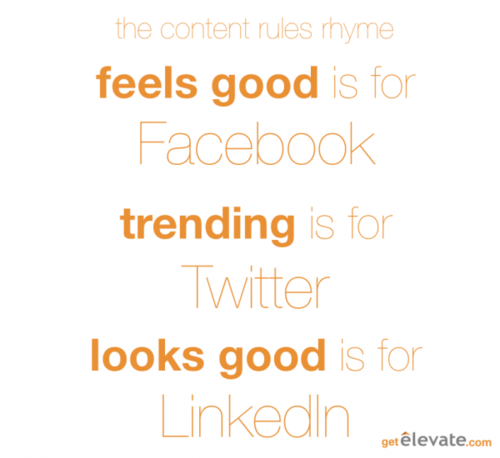

So, you started a social media ambassador program. You are on your way to the content marketing equivalent of the 6th level of heaven with eyes on the 7th. Your ambassadors will be the butterfly wings that start the hurricane of content sharing that will carry you to fame and earned media fortune on the Interwebz. But first, how do you get your ambassadors to actually start sharing?
In this post, I'm going to cover the basics of what makes ambassadors want to share your content and a few tips and tricks on how to get a social ambassador program running.

First off, the basics:
Why do ambassadors share content?
Ambassadors, many of whom are employees, share content because sharing it makes them look good. They want to add value to their connections, demonstrate they're an expert, and if they're an employee, show that they're a team player.
Why do ambassadors not share content?
Ambassadors forget to share content if sharing is inconvenient. As anyone who’s ever hit the snooze button knows, there's a huge gap between action and good intentions. You need to bridge that gap by making sharing content really, really easy.
Secondly, the details:
What kind of content do ambassadors want to share?
For the big three social networks, the content people want to share can differ pretty significantly. Here are some good rules of thumb:
Facebook: Ambassadors are most likely to share content that is funny, interesting, or emotionally relevant. During the Olympics a client of my company's, PricewaterhouseCoopers, provided funding to many Olympic athletes. News about those athletes makes every employee of the company proud, so sharing it made sense to them. The latest whitepaper on the predictions on the impact of tax changes in the mining sector? Not so much for Facebook. Share great stories about the positive changes your company has on the world and many ambassadors will share them.
Twitter: Although some people have strictly personal or professional profiles on Twitter, most people have a profile that mixes a bit of business with pleasure. Since many Twitter users use Twitter as their main public presence on the Internet, they tend to share content that reflects how they want the world to see them: industry insights as a professional, political news that reflects their personal viewpoints, trending news on issues they're passionate about, and news about the company they work for are all good fits. Content for Facebook will play well here, but you can also share news about your company and industry insights and thought leadership as long as it's relevant to that person. For example, don't share real estate news with someone who works exclusively in the oil industry.
LinkedIn: LinkedIn is a great platform for content sharing and should be a priority for ambassador programs. When we've tracked clickthrough rates from our own ambassadors at Elevate we've typically seen clickthrough rates in the 1.2% - 2.4% range, so ambassadors and sales teams with large networks can drive a lot of traffic with the right content. Most of what ambassadors want to share on LinkedIn is professional content. News that makes ambassadors look like an expert in their industry or role (marketing tips for a marketing person, research on trends in the industry they work in) and news that makes the company they work for look like it's a winner ('Acme Corp named Top 25 Best Employee in America') are both popular choices for sharing.
Now that you know what to share, how do you help your ambassadors share it?
Your ambassadors might already follow you on Twitter or like your company on Facebook, but are they logged on to Twitter when you tweeted? Have they interacted with your page on Facebook recently enough that Edgerank adds your post to their feed on Facebook? These are the hard questions that turn 'Going To' into 'Forgot To'. If your goal is to kickstart your content marketing to a broader network, you need to make sure you’re not missing out on advocates who want to share, but forget to because they missed the post.
I recommend a different approach: emails. Seriously. Get your best posts together, create targeted lists of your ambassadors so that the content you're sharing suits each group appropriately, and email your content to them. Include sharing buttons so it's easy share. Make them mobile optimized so people who receive them on their phones can share when they get them. If you really want the Cadillac of ambassador sharing, ensure you have a tracking program in place so you can tell who's sharing what, where, and with what size of an audience so you track the earned media value to demonstrate how much money this program is making for your company. This isn't easy, which is why there are advocate marketing platforms like Elevate and SocialChorus, but it can be done in house if you're keen enough. And remember, even if you're just emailing out a list of URLs with your top posts, you're still making it more convenient for your ambassadors then doing nothing.
Do you have any other ideas for what content advocates like to share? Any thoughts on smart ways to help them share it? I'd love to hear them!
@ Copyright 2013 Elevate Inc. All Rights Reserved